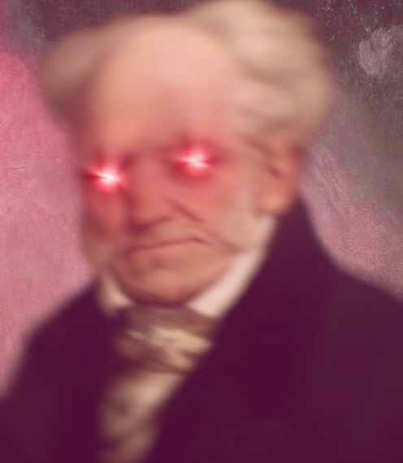

The vanity of existence is revealed in the whole form existence assumes: in the infiniteness of time and space contrasted with the finiteness of the individual in both; in the fleeting present as the sole form in which actuality exists; in the contingency and relativity of all things; in continual becoming without being; in continual desire without satisfaction; in the continual frustration of striving of which life consists. Time and that perishability of all things existing in time that time itself brings about is simply the form under which the will to live, which as thing in itself is imperishable, reveals to itself the vanity of its striving. Time is that by virtue of which everythin gbecomes nothingness in our hands and loses all real value.
That which has been no longer is; it as little exists as does that which has never been. But everything that is in the next moment has been. Thus the most insignificant present has over themost significant past the advantage of actuality, which means that the former bears to the latter the relation of something to nothing
To our amazement we suddenly exist, after having for countless millennia not existed; in a short while we will again not exist, also for countless millennia. That cannot be right, says the heart:and even upon the crudest intelligence there must, when it considers such an idea, dawn apresentiment of the ideality of time. This however, together with that of space, is the key to all true metaphysics, because it makes room for a quite different order of things than that of nature.That is why Kant is so great.
Every moment of our life belongs to the present only for a moment; then it belongs for ever to the past. Every evening we are poorer by a day. We would perhaps grow frantic at the sight of this ebbing away of our short span of time were we not secretly conscious in the profoundest depths of our being that we share in the inexhaustible well of eternity, out of which we tan forever draw new life and renewed time.
You could, to be sure, base on considerations of this kind a theory that the greatest wisdom consists in enjoying the present and making this enjoyment the goal of life, because the present is all that is real and everything else merely imaginary.But you could just as well call this mode of life the greatest folly: for that which in a moment ceases to exist, which vanishes as completely as a dream, cannot be worth any serious effort.
Our existence has no foundation on which to rest except the transient present. Thus its form is essentially unceasing motion, without any possibility of that repose which we continually strive after. It resembles the course of a man running down a mountain who would fall over if he tried to stop and can stay on his feet only by running on; or a pole balanced on the tip of the finger; ora planet which would fall into its sun if it ever teased to plunge irresistibly forward. Thus existence is typified by unrest.
In such a world, where no stability of any kind, no enduring state is possible, where everything is involved in restless change and confusion and keeps itself on its tight rope only by continually striding forward - in such a world, happiness is not so much as to be thought of. It cannot dwell where nothing occurs but Plato's 'continual becoming and never being. In the first place, no manis happy but strives his whole life long after a supposed happiness which he seldom attains, andeven if he does it is only to be disappointed with it; as a rule, however, he finally enters harbourshipwrecked and dismasted. In the second place, however, it is all one whether he has been happyor not in a life which has consisted merely of a succession of transient present moments and is now at an end
The scenes of our life resemble pictures in rough mosaic; they are ineffective from close up, and have to be viewed from a distance if they are to run beautiful. That is why to attain something desired is to discover how vain it is; and why, though we live all our lives in expectation of better things, we often at the same time long regretfully for what is past. The present, on the other hand,is regarded as something quite temporary and serving only as the road to our goal. That is why most men...are surprised to see that which they let go by so unregarded and unenjoyed wasprecisely their life, was precisely that in expectation of which they lived.
Life presents itself first and foremost as a task: the task of maintaining itself... If this task is accomplished, what has been gained is a burden, and there then appears a second task: that of doing something with it so as to ward off boredom, which hovers over every secure life like abird of prey. Thus the first task is to gain something and the second to become unconscious of what has been gained, which is otherwise a burden
That human life must be some kind of mistake is sufficiently proved by the simple observation that man is a compound of needs which are hard to satisfy; that their satisfaction achieves nothing but a painless condition in which he is only given over to boredom; and that boredom is a direct proof that existence is in itself valueless, for boredom is nothing other than the sensation of the emptiness of existence. For if life, in the desire for which our essence and existence consists, possessed in itself a positive value and real content, there would be no such thing as boredom: mere existence would fulfill and satisfy us. As things are, we take no pleasure inexistence except when we are striving after something - in which case distance and difficulties make our goal look as if it would satisfy us (an illusion which fades when we reach it)- or when engaged in purely intellectual activity, in which case we are really stepping out of life so as to regard it from outside, like spectators at a play. Even sensual pleasure itself consists in a continual striving and ceases as soon as its goal is reached. Whenever we are not involved in one or other of these things but directed back to existence itself we are overtaken by its worthlessness and its vanity and this is the sensation called boredom
That the most perfect manifestation of the will to live represented by the human organism, with its incomparably ingenious and complicated machinery, must crumble to dust and its wholeessence and all its striving be palpably given over at last to annihilation - this is nature'sunambiguous declaration that all the striving of this will is essentially vain. If it were somethingpossessing value in itself, something which ought unconditionally to exist, it would not havenon-being as its goal.
Yet what a difference there is between our beginning and our end. We begin in the madness ofcarnal desire and the transport of voluptuousness, we end in the dissolution of all our parts andthe musty stench of corpses. And die road from the one to the other too goes, in regard to ourwell-being and enjoyment of life, steadily downhill: happily dreaming childhood, exultant youth,toil-filled years of manhood, infirm and often wretched old age, the torment of the last illness andfinally the throes of death - does it not look as if existence were an error the consequences ofwhich gradually grow more and more manifest.
We shall do best to think of life ...as a process of disillusionment: since this is, clearly enough, what everything that happens to us is calculated to produce.
Početak
Prethodna strana